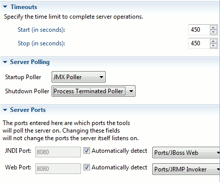

< Main Index Seam Tools News >
General |
|
|
XML Catalog |
We added in a range of JBoss related DTD's and Schema's into Eclipse's XML Catalog. For example: JBoss JCA Config, MBean service, JBoss Web Service reference and jaxws-config. This makes the xml validation and code completion available without extra setup or need for being online. |
Servers |
|
|
Port preferences |
Our server adapter by default tries to automatically detect the ports it needs for integrating with a JBoss server. Sometimes it can though be relevant to override this automatic detection if a user is using some custom configuration. These port settings are now configurable on the Server in the Server Editor.  Other server settings like Timeouts and Server polling have also been moved to the server editor from the seperate preference page in Eclipse preferences. |